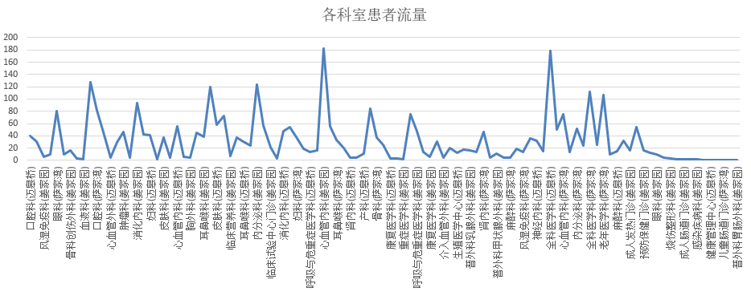
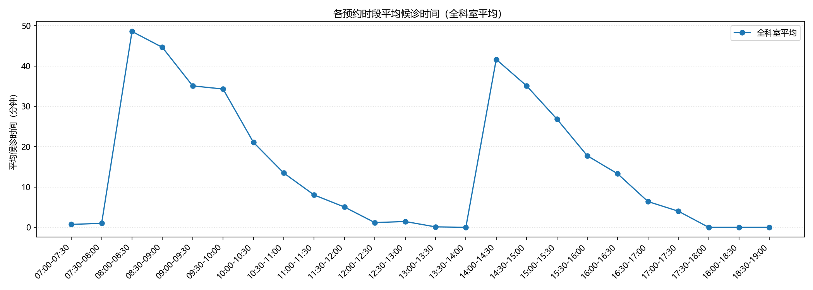
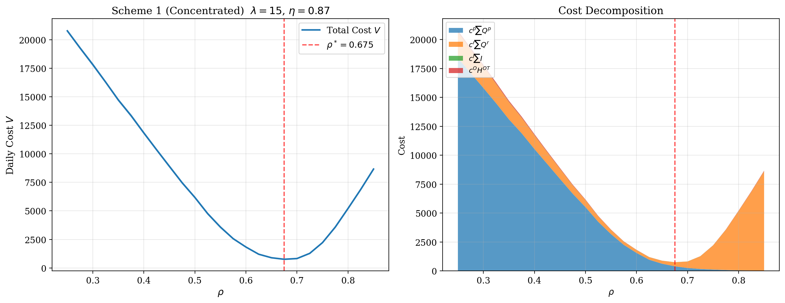
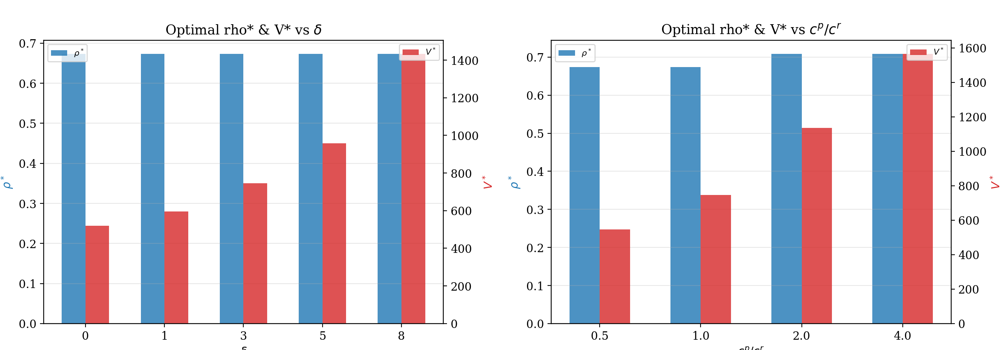
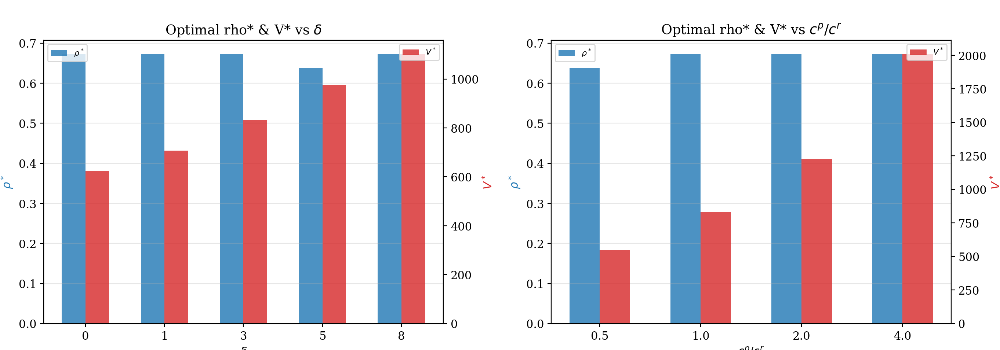
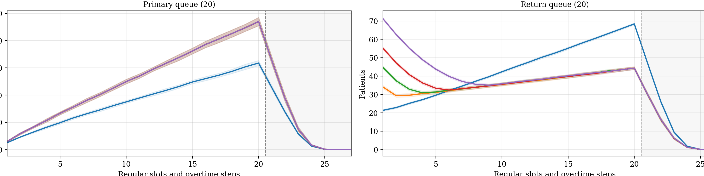
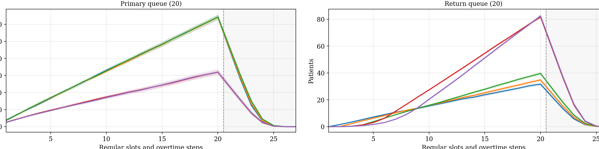

从首诊与复诊的时间冲突出发，给出一套更贴近门诊现场的排班判断框架。
门诊真正难的，不只是今天来了多少人，还包括前几天首诊触发出来、今天又回来的复诊压力。


我们真正想帮助医院回答的，不是一个抽象数学问题，而是三个很具体的管理问题。
一天的门诊时间里，首诊和复诊各留多少，才不会让一边排队、一边被挤压。
无法落在理想时点的复诊，是堆到次日一早，还是主动分散到次日全天。
患者量、等待优先顺序和回流规律一旦变化，排班建议是否也应该跟着调整。
患者第一次来看病，完成问诊、检查开单和初步处置。
一部分患者会进入检查检验流程，结果不会在同一时点全部返回。
患者带着结果回来继续就诊，形成对同一位医生时间的再次占用。
今天的首诊安排，会影响未来几天的复诊压力；首诊和复诊不是两条互不相关的线，而是在争夺同一个医生的时间。
单位时段新来的首诊患者量高不高，门诊现在是宽松、紧张，还是已经接近满负荷。
医生一天的时间里，有多大比例优先留给第一次来看病的患者。
无法落在理想时点的复诊，是集中到次日一早，还是主动分散到次日全天。

主页面只保留两个最值得讲的因素: 复诊回流窗口和等待优先顺序。拖堂容忍度、结构性空档放到口头里一句带过，不再挤在主图上。
集中安排时，最该盯的还是这两项

左边看“多久回来复诊”，右边看“更不希望哪类患者久等”。两块都明显变化，说明这两项值得优先重估。
换成分散安排，这两项还是最关键

换了安排方式之后，排序并没有根本改变，这说明我们抓到的是相对稳定的管理抓手。
患者量有多高，门诊现在处在什么负荷区间。
医院更不希望哪类患者久等，排班建议会随之偏移。
单独围绕拖堂容忍度或结构性空档做文章，当前不是最直接的抓手。
宽松时差一点可能问题不大；接近高负荷时，同样的偏差会被迅速放大成明显排队和拖堂。
首诊和复诊两边都还有余地，规则可以相对粗一些。
排班建议逐渐收紧，这时提前干预收益最高。
原本能接受的小偏差，开始明显放大成排队和后半段堆积。
单靠排班微调已经不够，需要考虑分流、限量和资源侧调整。
更优先保护首诊
适用于流程不熟、沟通时间长、等待过久更容易引发不满意的场景。此时排班建议会更多向首诊倾斜。
更优先保护复诊
适用于强调连续管理、结果解读、术后复查或慢病随访的场景。此时应给复诊保留更多可用时间。
这里不是在调一个抽象数学权重，而是在把医院自己的管理目标翻译成排班建议。
这页不再放整张科研图，只截取一个高负荷代表性场景。目的不是展示公式细节，而是让人一眼看出压力到底是前移，还是被摊平到全天。
集中安排：压力更容易早早顶上来

左边首诊队列、右边复诊队列。复诊端在前半段就更高，意味着门诊更容易一开始就觉得挤。
分散安排：早高峰没那么尖，但会拖得更长

峰值更多推迟到常规门诊末端附近，说明它是在把晨峰削开，但没有把压力真正消掉。
这里最重要的不是“哪个方案永远最好”，而是看医院最难管理的是前半天晨峰，还是全天被拉长的拖尾压力。
患者量到底高不高、医院更不希望哪类患者久等、复诊患者会不会在次日形成集中回流。
这些因素一变，首诊号源占比和次日复诊安排方式都可能随之变化。
单独围绕“门诊能不能再拖晚一点”或“是不是尽量不要出现空档”去优化，当前推动力相对弱。
医生工作强度和门诊节奏当然重要，只是当前更高优先级的管理抓手在别的地方。
系统仍有缓冲，首诊和复诊两边都还有一定弹性。
先识别哪些科室开始出现复诊回流扎堆，不必过度微调号源比例。
局部晨峰、个别科室回流时间点是否集中。
排班建议开始变敏感，是最值得提前调整的阶段。
更认真地看首诊号源占比，同时明确医院更想优先保护哪类患者等待体验。
哪一侧患者开始成为主要排队来源。
容错迅速变小，原本可接受的小偏差会被明显放大。
精细调整号源，并重点防止复诊在次日形成局部晨峰冲击。
后半段排队、拖堂时长、次日早高峰。
系统已接近或超过容量上限，单靠排班微调已经不够。
优化只能延缓问题，还需要分流、限量、弹性安排或资源侧调整。
是否已经出现持续拖堂、全天堆积和次日继续回压。
先看最忙的时间段有多忙，而不是只看全天平均水平。
检查检验之后，患者是当天回、隔天回，还是几天后扎堆回来。
不同科室、不同患者类型，对等待的敏感程度并不相同。
这会直接决定是否需要主动把复诊分散到全天。
这项工作的下一步，不是单纯把模型做得更复杂，而是和医院一起，把关键参数做得更真实。
单医生、首诊与复诊时间冲突、复诊回流节奏、次日安排方式。
多医生协同、多科室联动、患者失约、插队、转诊等更复杂场景。
先把最主要的时间分配矛盾看清楚，再决定下一步要在哪些环节加细节。
用贵院真实数据做科室版本或院内版本，再逐步扩展到更复杂的流程协同。
给第一次来看病患者预留的时间比例
今天门诊里，首诊大概占多少
首诊多一点还是复诊多一点
单位时段新来的首诊患者量
现在是宽松、紧张还是快满负荷
差一点会不会马上变糟
患者多久回来复诊
决定晨峰是否会放大
不是总量先出问题，而是时间点先出问题
医院更不希望哪类患者久等
首诊更优先，还是复诊更优先
目标一变，建议也会跟着变
集中安排：复诊压力更容易往前顶
如果现场想细看，这一页可以补充说明“为什么我们说它更容易早段拥堵”。
分散安排：更像把高峰摊到全天
适合在被追问“为什么说它不是更轻松，只是更平”时展开解释。
因为患者量、回流节奏和管理目标一变，推荐比例也会跟着变。我们提供的是判断框架，不是脱离场景的固定数字。
延长时间更像补救措施，能往后推问题，但不能替代更合理的首诊/复诊时间配置。
不是说不重要，而是从现在结果看，更能改写排班建议的，还是患者量、等待优先顺序和回流节奏。
当前更稳妥的方式是先做成科室版本，再逐步扩展，因为不同科室的回流规律和门诊结构差异很大。
因为不同方案的优劣和门诊负荷、回流节奏、管理目标都有关，我们不希望给出看似简单、但实际会误导执行的统一结论。
先补高峰时段真实首诊量、复诊回流窗口、等待最敏感人群，以及最容易形成次日晨峰的科室。